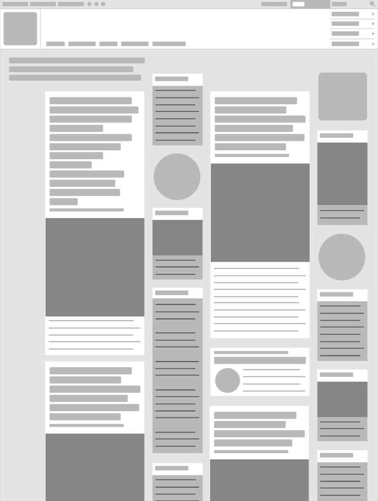

With this site hierarchy is established with AIGA's square logo firmly placed in the upper left-hand corner. Focal points are created by using extra bold san serif fonts for the headlines. This design choice creates contrast. Balance is created with the placement of a wide column and then a narrow column and so on. The placement of the wide column in respect to the narrow column also allows for a nice flow.

On this site hierarchy draws the viewers eye to the upper left-hand column where one sees the latest headline of the day. The serif font is bold and italicized. The headline is also set in a bigger size then any other headline on the page. Focal point takes the viewer to the main photo at the top of the page and then their eye is guide the left-hand where they can begin to scan the different columns. Balance is established by the use of different headlines. The main story gets the biggest headline. Secondary stories have a smaller headline and so on. This site has good flow or feng shui.